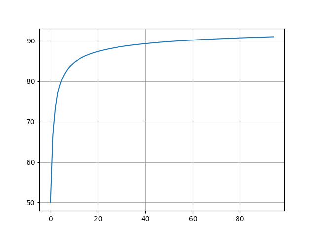
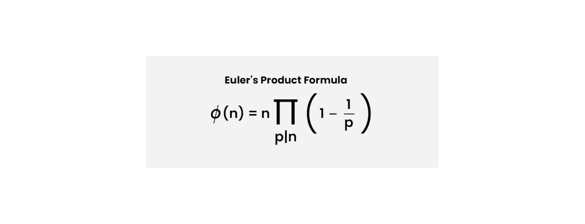
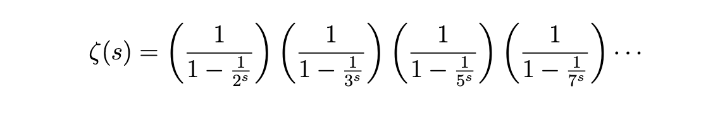

Imagine you have to find all the prime numbers up to x. You can use Sieve of Eratosthenes. But Sieve of Eratosthenes is expensive memory-wise. And I dont have to tell you about the current RAM crisis.
Another alternative is to check each number individually. This is where we can optimise with various methods.
Limiting the search upto the Square Root
When finding all the factors of a number, we dont have to check each number up to the given number. We can simply check for all the number up to the square root of the given number. Because all the factors of a number comes in pair. One on either side of the square root. If there is none on one side, there wont be any on another.
factors of 120 -> 1,2,3,4,5,6,8,10,12,15,20,24,30,40,60,120.
These can be divided in pairs on either side of the square root of 120 i.e. 10.95
Factors of 120 - >(1,120),(2,60),(3,40),(4,30),(5,24),(6,20),(8,15),(10,12)..
Check only Prime Numbers
Another trick is to check the divisibility of number only with prime numbers below it. A number cant be divisible by 4 if its not divisible by 2. Similarly, if no prime under the square root of a number divides the it, then the given number is prime.
For example, let's take 1123. It's square root is 33.51.
The prime numbers below it are, 2,3,5,7,11,13,17,19,23,29,31. Since none of them divide 1123, it's a prime number.
We reduced the numbers we had to check from 33 to 11.
Initial idea
There is one more way to reduce the numbers we need to check. All the primes other than 2 are odd. Which mean we only have to check 50% numbers.
Some people figured out something even better. All primes other than 2 and 3 are of the form 6k ± 1. Which mean we can reduce the numbers to check all the way down to 33%. 2 numbers per 6. It's a significant improvement. But that got me thinking, "Is there a better number for this test?"
I picked up the pen and paper and checked a few highly composite numbers. 4, 8, 12, 24, 30.
We only have to check all the numbers which are co-prime to our number. In this case of 30 they are, (1,7,11,13,17,19,23,29). So we only have to check 8 numbers out of 30.
All primes greater than 30 are of form, 30k + 1 or 30k + 7 or 30k + 11 and so on.
Which means if we choose 30, we can reduce the percentage of numbers to 26.6%.
Scaling the idea
I ran a python script to check all such numbers. I searched through about 1 million numbers. And surprisingly, I found out that there are even more such numbers!
2, 6, 30, 210, 2310, 30030, 510510.
All of them reduces the percentage more than previous one. While looking at the numbers being printed one by one, I checked their prime factorisation and it was interesting. 2 is a prime itself, 6 = 2x3, 30 = 2x3x5, 210 = 2x3x5x7 and so on. These are called primorials. To check if it actually works, I wrote another python script and sure enough, it kept getting better and better.

This is the point where I started doing some research.
A Proof
To find the number of co-primes of n which are less than n, Euler already gave us a beautiful formula. Euler's Toteint formula.

In our case, n = p1*p2*p3... But we have to divide this number by n to get the percentage of numbers. So the formula reduces to,
(1-1/p1) x (1-1/p2) x (1-1/p3) ...
As you can see, each term is smaller than one. So this multiplication keeps getting smaller infinitely. But we dont know if it's asymptotic to 0 or converges because each time, the number being multiplied is closer and closer to 1.
I looked around for clues, I played around with some ideas until finally, I found something.
I had a hunch that I have seen something similar while I was studying the zeta function. I looked for it and found this:

As you can see, if we take a reciprocal of the zeta function and set s = 1, we get Euler's Totient function. And 1/ζ(1) tends to 0.
This proves that as we keep increasing n, we can keep getting better and better result because the function is asymptotic to 0.
Vectorisation
I made another python code to implement this method for any primorial number you want. This is how the algorithm roughly works:
chosen_number = 30
nums = 1000 // To get all primes upto 1000
// keep a list of all primes upto chosen number
primes = [2,3,5,7,11,13,17,19,23,29]
r = np.array([1,7,11,13,17,19,23,29])
for i in range(nums/chosen_number):
r += chosen_number
rc = r.copy()
for p in primes:
// Applying modulus function to the vector.
if 0 in rc%p:
delete rc[indices of 0]
primes.append(rc)
I have proper code posted here. Check it out.
Issues
1. There are some little issues with this method. It only works after a certain primorial number. For my machine it was 2310.
2. While we get a better performance, a lot of time can be wasted on finding all the primes up to the number chosen.
3. Sometimes when you choose a number a little too high compared to the numbers you have to check, it could have worse performance. The primorial has to be picked carefully.
Specs
| Primes upto N | Individual numbers | Sieve of Eradosthenes | My Algorithm |
|---|---|---|---|
| 1 Million | 1.17 Sec | 0.073 sec | 0.020 sec |
| 10 Million | 23.82 sec | 0.777 sec | 0.635 sec |
| 100 Million | 0 | 8.076 sec (required 950 Mb memory) | 14.31 sec |
Author's note
It seems that I had not done enough research. After posting it on reddit, I found it already exists and it's called Wheel Factorzation. Thanks for letting me know.